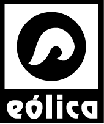

PICO 70, PICO 50, safePICO
Tomador de muestra (jeringas) para gasometría
DESCRIPCIÓN:
Los tomadores de muestra PICO de Radiometer para análisis de pH, gases en sangre, oximetría, electrólitos y metabolitos disminuyen los errores preanalíticos de medición al facilitar la extracción de sangre, estabilizar y preservar la muestra para minimizar el riesgo de contaminación. Además cuentan con un disco de heparina sólida equilibrada electrolíticamente para reducir el riesgo de coágulos, los sesgos en las mediciones de electrólitos y la dilución de la muestra.
El tomador de muestra PICO 70 es un dispositivo de autollenado cuyo diseño permite puncionar la arteria y obtener un volumen prefijado de sangre, fácil y rápidamente. El operador posiciona el émbolo antes de realizar la extracción, coloca el tomador de muestra y la presión arterial llena el barril con la sangre. Cuenta con aguja de bisel corto que es más fácil de posicionar dentro de la arteria sin causar hematomas y sangrado interno por la rotura de la pared arterial opuesta.
El tomador de muestras PICO 50 es un dispositivo de aspiración, recomendado para usarse con pacientes que ya cuentan con una línea arterial o venosa, lo que elimina la necesidad de aguja.
Estos modelos cuentan con el tapón TIPCAP, diseñado para ajustarse firmemente a la jeringa impidiendo la entrada de aire después de sellarla, evitando la salida de la muestra para reducir el riesgo de contacto con sangre durante la mezcla y transporte.
El tomador de muestras safePICO está diseñado para brindar mayor seguridad al paciente con su código de barras que permite la vinculación de los resultados de la muestra con los datos del paciente. También cuenta con una bola agitadora para asegurar una mezcla homogénea de la muestra. Los beneficios para el operador se deben al diseño del tapón safeTIPCAP que limita el contacto con la sangre del paciente y facilita la eliminación de burbujas de aire. Además, su funda de seguridad permite retirar la aguja con una sola mano. Éste se encuentra disponible con sistema de aspiración o de autollenado.
ESPECIFICACIONES TÉCNICAS:
PICO 70: Dispositivo de autollenado de 0.3 a 1.5 mL.
PICO 50: Dispositivo de aspiración de 0.5 a 2 mL.
safePICO: Dispositivo de aspiración o autollenado de 0.7 a 1.7 mL.
Solicite sin costo un manual o un póster educativo sobre el manejo correcto de muestras arteriales y errores preanalíticos para estudios de gasometría y electrólitos.
Registro PICO 70: 2198C2015 SSA
Registro PICO 50: 0253C2016 SSA
DATOS COMPLEMENTARIOS: Para mayor información comunicarse a:
GRUPO Eólica, S.A. DE C.V.
|
Teléfono: (55) 5584-4699 |
 |